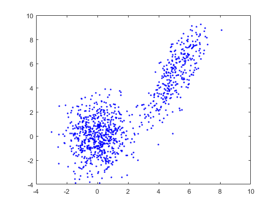
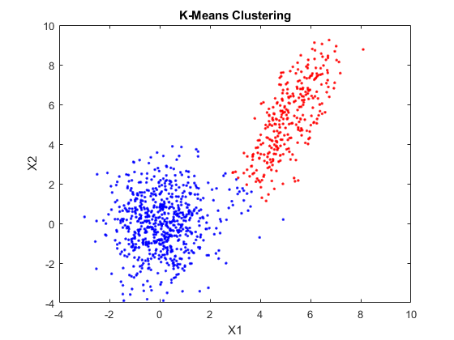

Contents
close all
clear all
load data.mat
figure
plot(data(1,:),data(2,:),'b.')
number_of_clusters = 2;
centroid_index = randi(length(data),number_of_clusters,1);
centroids = data(:,centroid_index);
while 1
for j=1:length(data)
magnitude = sum((centroids - repmat(data(:,j), 1, 2)).^2);
[y, index] = min(magnitude);
temp(j) = index;
end
Previous_centroids = centroids;
for j=1:length(data)
for k = 1:2
samples = data(:,temp==k);
centroids(:,k) = mean(samples,2);
end
end
if Previous_centroids == centroids
break;
end
end
X = sprintf('The centroids are: (%f, %f) and (%f, %f)',centroids(1,1),centroids(2,1),centroids(1,2),centroids(2,2));
disp(X)
figure
plot(data(1,temp==1),data(2,temp==1),'r.')
hold on
plot(data(1,temp==2),data(2,temp==2),'b.')
xlabel('X1')
ylabel('X2')
title('K-Means Clustering')
data_cluster_1= [3,3;centroids(1,1),centroids(2,1)];
data_cluster_2= [3,3;centroids(1,2),centroids(2,2)];
d1 = pdist(data_cluster_1,'euclidean');
d2 = pdist(data_cluster_2,'euclidean');
if (d1<d2)
result = sprintf('The data (3,3) belongs to cluster with centroid: (%f, %f) - Cluster_Color = Red',centroids(1,1),centroids(2,1));
disp(result)
else
result = sprintf('The data (3,3) belongs to cluster with centroid: (%f, %f) - Cluster_Color = Blue',centroids(1,2),centroids(2,2));
disp(result)
end
The centroids are: (5.133442, 5.261360) and (0.116186, 0.026701)
The data (3,3) belongs to cluster with centroid: (5.133442, 5.261360) - Cluster_Color = Red
 
#
close all
clear all
load data.mat
Posterior_probability = zeros(2,length(data));
phi = [0.5;0.5];
Index_mean = randi(length(data),2,1);
Allmeans = data(:,Index_mean);
Covariances = zeros(2,2,2);
Covariances(:,:,1) = [1 0; 0 1];
Covariances(:,:,2) = [1 0; 0 1];
while 1
for j=1:length(data)
for m=1:2
Posterior_probability(m,j) = mvnpdf(data(:,j),Allmeans(:,m),Covariances(:,:,m))*phi(m);
end
Posterior_probability(:,j) = Posterior_probability(:,j)/sum(Posterior_probability(:,j));
end
lastPhi = phi;
phi = sum(Posterior_probability,2) / length(data);
Allmeans(:,1) = sum(Posterior_probability(1,:).*data(:,:),2)/sum(Posterior_probability(1,:));
Allmeans(:,2) = sum(Posterior_probability(2,:).*data(:,:),2)/sum(Posterior_probability(2,:));
Covariances = zeros(2,2,2);
for j=1:length(data)
Covariances(:,:,1) = Covariances(:,:,1) + Posterior_probability(1,j)*(data(:,j) - Allmeans(:,1)) * (data(:,j) -Allmeans(:,1))';
Covariances(:,:,2) = Covariances(:,:,2) + Posterior_probability(2,j)*(data(:,j) - Allmeans(:,2)) * (data(:,j) -Allmeans(:,2))';
end
Covariances(:,:,1) = Covariances(:,:,1) / sum(Posterior_probability(1,:));
Covariances(:,:,2) = Covariances(:,:,2) / sum(Posterior_probability(2,:));
if lastPhi == phi
disp('The model parameters are: ')
disp(phi)
break;
end
end
disp('The probability for (3,3) to belong to the upper gaussian component is 97.14% as opposed to 2.86% for the lower component')
The model parameters are:
0.3274
0.6726
The probability for (3,3) to belong to the upper gaussian component is 97.14% as opposed to 2.86% for the lower component